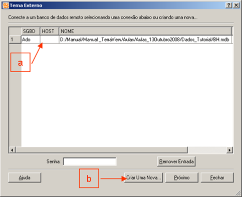
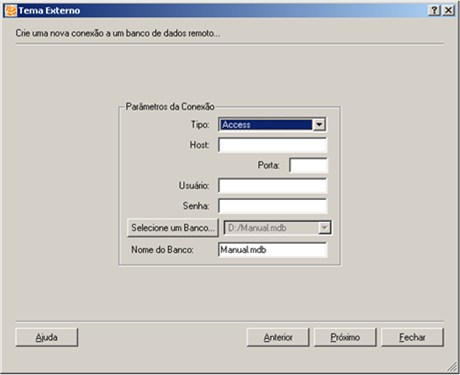
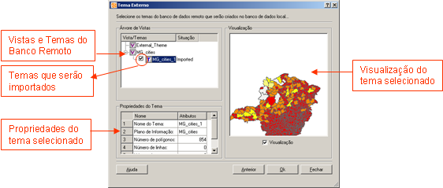
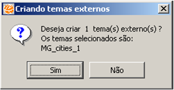
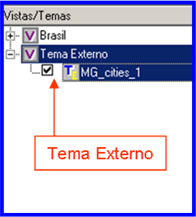

Plugin Tema Externo do TerraView - Versão 0.1
Guia do Usuário
Autora: Karine Reis Ferreira
(karine@dpi.inpe.br)
Data: 10/12/2007
- Introdução
- Como criar temas externos
2. Como criar temas externos
Passo 1) Conectar-se a um banco de dados remoto
Ao abrir o plugin, o usuário deve se conectar a
um outro banco de dados TerraView de onde serão extraídos os temas externos. Esse
banco é chamado de remoto. Na tela mostrada na Figura 01, o usuário tem duas opções:
a. Selecionar uma conexão já existente na lista de conexões
b. Criar uma nova conexão

Figura 01 - Tela para se conectar a um banco de dados remoto TerraView
Para selecionar uma conexão já existente, o usuário deve clicar sobre a conexão desejada, informar
a senha (se for preciso) e clicar no botão "Proximo".
Para criar uma nova conexão, o usuário deve informar os parâmetros de conexão em uma nova tela, mostrada na Figura 02, e clicar no botão "Proximo"

Figura 02 - Tela para criar uma nova conexão
Passo 2) Selecionar os temas externos
Após conectar-se a um banco de dados remoto, o usuário deve selecionar os temas desse banco que serão importados como temas externos. Na tela mostrada na Figura 03, o usuário pode visualizar as geometrias e as propriedades de cada tema e marcar, através da caixa ao lado esquerdo do nome do tema, os que serão importados.

Figura 03 - Tela para selecionar os temas do banco remoto que serão importados como temas externos
Depois de marcar os temas de interesse, o usuário deve clicar no botão "OK" para importá-los. Antes de começar a importação, uma lista com todos os temas que serão importados é mostrada, como na Figura 04.

Figura 04 - Lista dos temas que serão importados
Após executar os passos acima e fechar o plugin, os temas externos aparecerão na árvore de temas do TerraView, como mostrado na Figura 05. É importante observar que os temas externos possuem um ícone diferente dos temas convencionais.

Figura 05 - Temas externos na árvore de temas do TerraView